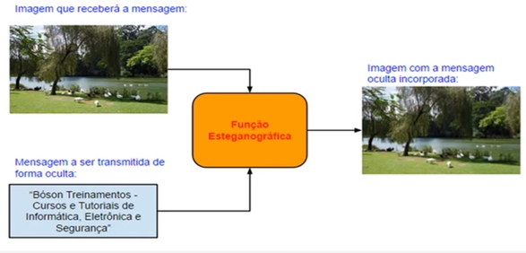
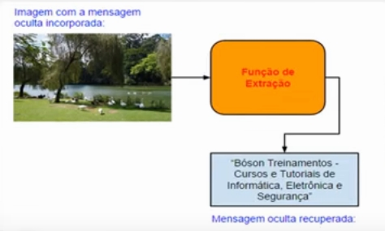

A Esteganografia é a ocultação de arquivos (como uma mensagem) em outro arquivo, como uma imagem, vídeo ou áudio.
Para usarmos a esteganografia, primeiro crie um arquivo de texto com alguma mensagem qualquer.
Depois, instale, caso já não tenha instalado, o Steghide usando o comando sudo apt-get install steghide.
O Steghide suporta vários formatos de arquivos, como JPEG, BMP, WAV e AU. Para ver o manual dele, digite man steghide.
Esses são os comando do Steghide:
Para ocultar uma mensagem em um arquivo de imagem ou som, usamos o comando embed seguido dos argumentos apropriados. Os principais argumentos são os seguintes:
-ef - Especificar o arquivo que será incorporado ou seja, o arquivo que contém a mensagem secreta. Se este argumento for omitido ou o nome do arquivo for o caractere-, os dados secretos serão lidos diretamente da entrada padrão (teclado).-cf - Especificar o arquivo portador que será usado para incorporar os dados secretos. Esse arquivo deve estar em um dos formatos a seguir: AU, BMP, JPEG ou WAV. Se este argumento for omitido ou o nome do arquivo for o caractere -, o steghide lerá o arquivo portador a partir da entrada padrão.Para extrairmos uma mensagem oculta de um arquivo esteganografado usamos o comando extract, cujo argumento principal é esse:
-sf - Especificar o arquivo esteganografado (que contém os dados secretos embutidos). Se este argumento for omitido ou o nome do arquivo for o caractere -, o steghide lerá o arquivo esteganografado a partir da entrada padrão.Primeiramente, pegue uma imagem grande em JPEG, e crie um arquivo de texto com uma mensagem.
Para ocultar a mensagem dentro da imagem, digitamos esse comando, no diretório onde estão os arquivos:
steghide embed -cf imagen.jpg -ef mensagem.txt
Ele pedirá pra criar uma senha., e o arquivo é modificado, visualmente ela estará igual antes, mas terá a mensagem oculta. Para especificar um algoritmo de criptografia, use a opção -e seguida do algoritmo, por exemplo -e rc2.
Para mostrar informações do arquivo, fazemos assim:
steghide info imagem.jpg
No caso acima, ele mostrará os dados da imagem, e mostrará a opção de tentar obter dados do arquivo embutido, aí ele pedirá a senha pra mostrar estes dados.
E para extrair a mensagem, fazemos isso:
steghide extract -sf imagens.jpg
Ele pedirá a senha, e extrairá a mensagem.
Para mostrar informações sobre os algoritmos de criptografia, use esse comando:
steghide encinfo
O DMitry (Deepmagic Information Gathering Tool) é uma aplicação Open Source de linha de comandos que nos permite coletar diversos tipos de informações sobre um host em uma rede. A ferramenta, que é codificada em linguagem C, é capaz de coletar dados sobre subdomínios, endereços de e-mail, efetuar escaneamento de portas TCP (port scan), lookups whois e mais algumas funções.
O site oficial do projeto é o http://mor-pah.net/software/dmitry-deepmagic-information-gathering-tool/, onde você pode baixar a versão mais recente do pacote. No kali Linux, a ferramenta está presente por padrão, não sendo necessário baixá-la e instalá-la. De acordo com o site do desenvolvedor, o DMitry pode ser executado em várias plataformas, incluindo FreBSD, Mac OS X, SuSE Linux e OpenBSD, entre outras. Ele lembra um pouco o Nmap, mas é um pouco mais simples.
Vamos começar executando o software sem usar nenhuma opção. Para isso, execute o comando a seguir no terminal:
dmitry
Ele mostrará a saída que explica as funções das opções do programa.
Exemplo de um lookup whois num host:
dmitry -w www.google.com.br
Podemos realizar um TCP port scan no endereço 192.168.1.1:
dmitry -p 192.168.1.1
E um TCP port scan no endereço 192.168.1.110 (uma estação com Windows 7), porém mostrando as portas filtradas na saída:
dmitry -p -f 192.168.1.110
E pra salvar a saída do comando anterior em um arquivo:
dmitry -p -f 192.168.1.110 -o portas-escaneadas
O Kali Linux traz outras ferramentas para coleta de informações sobre hosts, muitas delas bem mais completas que o DMitry, que é uma ferramenta bem simples
O utilitário de linha de comandos macchanger (GNU Mac Changer), escrito por Alvaro Lopez Ortega, permite visualizar e manipular o endereço MAC (Media Access Control) das interfaces de rede do computador. Esse utilitário está presente nativamente no Kali Linux.
Para instalá-lo no Debian GNU/Linux e derivados (como o Ubuntu Linux) use o comando a seguir:
sudo apt-get install macchanger
A sintaxe básica dele é macchanger opções dispositivo.
PS: Todos os comandos deverão ser utilizado como root, então dê sudo su caso não esteja no Kali. Pode ser necessário também dar um down na interface antes de fazer alterações nela.
Vamos visualizar o endereço mac (MAC Address) atual da interface eth0:
macchanger -s eth0
Vamos alterar o endereço MAC da interface eth0 sem no entanto alterar os bytes do fabricante, criando um endereço aleatório:
macchanger -e eth0
Podemos também configurar um endereço MAC totalmente aleatório na interface eth0:
macchanger -r eth0
Ou configurar um endereço MAC específico, como o 12:34:56:78:90:AB, na interface eth0:
macchanger -m 12:34:56:78:90:AB eth0
E podemos também resetar o endereço MAC para o valor original na interface eth0:
macchanger -p eth0
Primeiro, veja se o openssh-server está instalado no Linux, e se o serviço está ativo (dando o comando sudo service ssh start), e no Android, vá na Play Store e baixe o VX ConnectBot nele.
No Linux, pegue o IP privado dele (digitando ifconfig), e coloque no programa do Android, o nome do usuário no Linux, o IP e a porta, na sintaxe nomedeusuario@192.168.0.1:22 (22 é a porta padrão do SSH).
Ao tentar a conexão, ele pedirá a senha do Linux e logará nesse sistema via SSH, podendo ser controlado pelo Android.
PS: Pode ser necessário ter que liberar a porta 22 no Firewall do Linux.
Podemos também acessar um servidor Windows, nesse caso configuramos o Moba SSH como servidor.
Primeiro loge dentro do Linux e baixe o servidor VNC digitando sudo apt-get install x11vnc, e depois inicie o serviço digitando x11vnc --forever (deixe o terminal aberto).
No Android, vá na Play Store e baixe o aplicativo VNC Viewer, que tornará nosso Android um cliente VNC.
Dentro do APP Android, colocamos em Adress o IP privado do servidor seguido da porta, e o nome de usuário dele em Name, ele mostrará a conexão sem criptografia (que não pede a senha). Dentro do Android mostrará inclusive a interface gráfica do Linux acessado.
Podemos também acessar um Windows pelo Android, nesse caso instalamos no Windows o Tight VNC e usamos ele como servidor no PC, o restante permanece da mesma forma.
PS: Pode ser necessário ter que liberar a porta do VNC (especificada no terminal) no Firewall do Linux.
A esteganografia é uma técnica utilizada para "esconder" ou ocultar mensagens, imagens ou arquivos dentro de outros arquivos.
A esteganografia tem origem na Grécia antiga, na qual escreviam com uma tinta "invisível" que só podia ser vista com uma técnica especial. Em informática, usamos dois arquivos, a mensagem e o portador (carrier).
Vamos ver na imagem abaixo o que faremos em seguida:
E da mesma forma, a extração do mesmo:
Lembrando que no exemplo usaremos texto em uma imagem, mas qualquer arquivo pode ser inserido em qualquer arquivo.
Existem vários programas disponíveis para esteganografia, no exemplo, vamos usar o OpenPuff para Windows.
Baixe o OpenPuff, ele não precisa de instalação, basta apenas descompactar e usar. Clique aqui para baixar.
Abra a pasta e execute o aplicativo dentro dela. Ele demora um pouco enquanto, veja que ele tem várias opções como, além da esteganografia, tem marca d'água (pra proteger os direitos autorais de imagens e arquivos).
Clique no botão "Hide" e ele abrirá a tela para isso. Na tela que abrir, vá na parte 1 e insira até três senhas diferentes nos campos, a primeira é requerida, para criptografar, as outras são recomendadas, mas opcionais, a segunda é pro gerador de números aleatórios e a terceira é o embaralhamento da mesma.
Coloque num txt uma mensagem qualquer e selecione uma imagem (para query).
Na parte dois, clique em "Browse" e selecione o txt da mensagem (que será o arquivo a ser escondido).
Na parte três, coloque os arquivos em "ADD" (vamos trabalhar só com um no caso, se a mensagem for grande, pode ser dividida em vários portadores).
Na parte quatro é opcional, é mais pra escolher a qualidade do arquivo ou dos algoritmos utilizados, etc.
Depois é só salvar o novo arquivo clicando em "Hide Data". Veja que aparentemente, nada da imagem parece alterada.
Para descobrir a mensagem, pegue o arquivo esteganografado e faça o mesmo procedimento no OpenPuff, escolhendo a opção "Unhide". carrega ela em ADD Carries e em Unhide. A mensagem oculta será salva como um novo arquivo.
Dependendo do tamanho do arquivo a ser escondido, a imagem poderá ter tamanhos diferenciados, se uma imagem tiver tamanho muito grande, é provável que tenha alguma coisa escondida, principalmente malwares.
Primeiro vamos baixar e instalar o programa GPG4Win (que contém o Kleopatra) para trabalharmos com criptografia. Baixe ele aqui: https://www.gpg4win.org/get-gpg4win.html
PS: Pode ser que a versão do GnuPG que vem com o GPG4Win esteja desatualizada, nesse caso atualize baixando daqui: https://gnupg.org/ftp/gcrypt/binary/
Abra o Kleopatra, clique em file e em new certificate, as escolha de formato será aberto, as opções são OpenPGP (que é um padrão aberto e são criadas localmente, sem uma autoridade de certificação, podendo ser certificadas pelos amigos e conhecidos), e a X.509 (que precisará verifiar a chave com uma autoridade de certificação, que terá um custo). No caso, criaremos OpenPGP.
Ao abrir o Kleopatra e escolher OpenPGP, coloque o nome, e-mail e comentário para o qual será enviado.
Tem um botão escrito Advanced Settings, que tem algumas opções avançadas como as de algoritmos (escolha RSA de preferência), tamanhos de chaves e validades. Quanto maior a chave, mais difícil de quebrar a criptografia, porém, mais recursos de hardware serão consumidos. Marque a opção autenticação para configurar a validade dela.
No próximo, ele mostrará os dados, e depois pedirá para você inserir uma senha para descriptografar posteriormente.
Ele criará a chave, exibirá o fingerprint, terá as opções de fazer um back-up dela também.
Na chave pronta, clique com o botão direito para ver as opções deles para alteração e criação de certificados. Temos opções para exportar as chaves públicas e privadas, gerar certificados de revogação, etc.
Para encriptar um arquivo com essa chave, basta ir em file, sign/encrypt files, adicionar o arquivo, escolher a chave criada, e confirmar, será gerado um arquivo criptografado. Também podemos encriptar um arquivo com uma senha.
Para desencriptar, faça da mesma forma, insira a senha (caso seja criptografado com uma, se foi criptografado com sua chave pública, ele pedirá a senha da sua chave privada) e ele será descriptografado.
O Kleopatra também fornece um autenticador de chaves, basta colocar o arquivo e a chave dele na mesma pasta e clicar diretamente na chave, que abrirá o Kleopatra e verificará a autencidade do arquivo (podendo também pesquisar a chave dele num servidor, importar e certificar a mesma). Podemos também assinar arquivos com nossa chave privada, indo em sign/encrypt files. Também é possível usar a maioria dos comandos do GPG do Linux pelo CMD do Windows.
O MobaSSH é um servidor SSH que roda no Windows, com ele podemos executar comandos e transferir arquivos de uma máquina remota Windows a partir de outra máquina de qualquer sistema operacional, usando uma conexão criptografada com o protocolo SSH.
Primeiro, baixe o MobaSSH do site oficial dele, baixe a free: https://mobassh.mobatek.net/
Descompacte o executável, e instale ele no seu Windows. Veja que temos a configuração de várias coisas dentro do programa. Ele será instalado como um serviço e por isso, precisamos reiniciar ele.
Primeiramente, devemos usar uma conta do Windows com uma senha, então coloque uma senha ou crie uma conta administradora com senha e acesse por ela. O MobaSSH não permite acesso sem senha por segurança (mas é configurável).
O mesmo arquivo, usado para baixar e instalar o MobaSSH, é usado para gerenciar, atualizar e desinstalar à ele mesmo.
Devemos também adicionar uma regra no firewall do Windows, em regras de entrada clique com o botão direito, crie uma nova regra, e escolha a opção porta, regra TCP e porta 22, permitir a conexão e o escopo da regra, e dê um nome à ela.
Abriremos o CMD e pegue o IP privado da máquina, e na outra máquina da sua rede, podemos usar um programa como o Bitvise SSH para acessar essa primeira máquina.
Lembrando que mesmo sendo acesso à um Windows, ele exibirá da mesma estrutura como um Linux.
PS: No Windows 10 podemos instalar o servidor SSH nativo do sistema, indo em Apps e Recurso e Recursos Opcionais.
O registro é um banco de dados hierárquico no Windows que armazena informações importantes sobre hardware do sistema, programas instalados e configurações, alé de perfis de cada uma das contas de usuário no computador.
O registro foi introduzido no Windows 3.1, e foi expandido ao longo do tempo para armazenar mais informações e configurações do sistema e programas. Antes de existir o registro, as configurações dos programas eram armazenados em arquivos de texto com extensão .ini, que ainda existe, mas é bem menos usado que antigamente, praticamente tudo é feito no registro, hoje em dia.
Para abrir o registro, procure no executar ou no iniciar "regedit.exe", ele será executado como administrador.
Os dados do registro são armazenados em chaves (compartimentos, como se fossem "pastinhas"), e dentro deles tem subchaves, que funcionam da mesma forma. As configurações que aparecem do lado direito são chamados de valores. Os valores sempre possuem um nome, o tipo de dados e o conteúdo dos dados (como se fossem variáveis). Tudo isso são parâmetros que ficam armazenados dentro das chaves, e os valores são itens de configurações.
Esses são os tipos de dados mais comuns em entradas de registro, que são utilizados para configurar os valores que guardamos dentro das chaves:
| ID do tipo | Nome Simbólico | Significado |
|---|---|---|
| 0 | REG_NONE | Sem tipo definido |
| 1 | REG_SZ | Valor de cadeia de caracteres UTF-16 |
| 2 | REG_EXPAND_SZ | Valor de cadeia de caracteres expansível |
| 3 | REG_BINARY | Dados binários |
| 4 | REG_DWORD | Valor DWORD, inteiro sem sinal de 32 bits |
| 7 | REG_MULTI_SZ | Cadeia de caracteres múltipla (lista ordenada) |
| 11 | REG_QWORD | Valor QWORD, inteiro de 64 bits |
O registro tem cinco chaves principais (chaves raiz ou de alto nível), que são essas:
PS: Podem existir também outras, dependendo da versão dos Windows.
A chave HKEY_CLASSES_ROOT contém informações relativas a associações de nomes de arquivos, objetos OLE, associações com objetos COM, e associações de arquivos de classe. Parâmetros contidos nessa chave são na verdade um link (atalho) para a chave HKEY_LOCAL_MACHINE\SOFTWARE\Classes. Abreviada normalmente como HKCR.
A chave HKEY_CURRENT_USER contém as configurações do usuário logado no sistema no momento, incluindo variáveis de ambiente, configurações de desktop, de redes e de aplicações. É um link para HKEY_USERS\<SID-DO-USUÁRIO-ATUAL>. Abreviada normalmente como HKCU.
A chave HKEY_LOCAL_MACHINE contém todas as informações globais de hardware e sistema operacional. A informação nessa chave é aplicável a todos os usuários que se logam no sistema local. Abreviada normalmente como HKLM.
A chave HKEY_USERS contém dados de todos os perfis de usuários no sistema, incluindo HKEY_CURRENT_USER e o perfil de usuário padrão. No geral, usamos a chave HKCU para configuração do usuário atual. Abreviada normalmente como HKU.
A chave HKEY_CURRENT_CONFIG armezena todos os dados sobre a configuração atual de hadware da máquina. É um link para HKEY_LOCAL_MACHINE\SYSTEM\CurrentControlSet\Hardware Profiles\Current. Não é muito utilizada no geral. Abreviada normalmente como HKCC.
Uma das coisas que podemos fazer no registro é exportar ele (fazer um backup), apenas indo em arquivo e exportar, escolhendo a ramificação selecionada ou tudo. Da mesma forma, você importa os dados.
Para criar uma chave, podemos fazer isso clicando com o botão direito no local onde ela será inserida (por exemplo, em HKEY_LOCAL_MACHINE\SOFTWARE), podemos escolher uma nova chave (pasta) ou diretamente os valores. No exemplo, criaremos a chave Teste, ele já terá um valor padrão não definido dentro dela (ou seja, está vazia), basta clicar duas vezes nele, colocar os valores na janela que abre e dar OK, ele já será salvo (em alguns casos pode ser necessário reiniciar o PC). Da mesma forma, podemos criar novos valores dentro da mesma chave, clicando com o botão direito dentro dela.
Caso você entre muito numa chave de difícil localização que precise mexer com frequência, clique nela e adicione aos favoritos, logo acima do editor de registro, nesse mesmo local terá o link de acesso direto à ela. Da mesma forma, podemos remover os favoritos.
A seguir veremos um exemplo de configuração de registro do Windows que você pode testar em seu sistema (de preferência, teste numa máquina virtual).
Para desabilitar o painel de controle, vamos em HKEY_LOCAL_MACHINE\SOFTWARE\Microsoft\Windows\CurrentVersion\Policies\Explorer e criar o valor NoControlPanel do tipo DWORD, e o valor será 1 (pra habilitar restrição), pra desabilitar o valor é 0 (de preferência hexadecimal). Depois o valor criado pode ser excluído.
PS: Os nomes não podem ter erros, e eles não são inventados, são nomes que o sistema e/ou os programas reconhecem. E tome muito cuidado para mexer no registro.